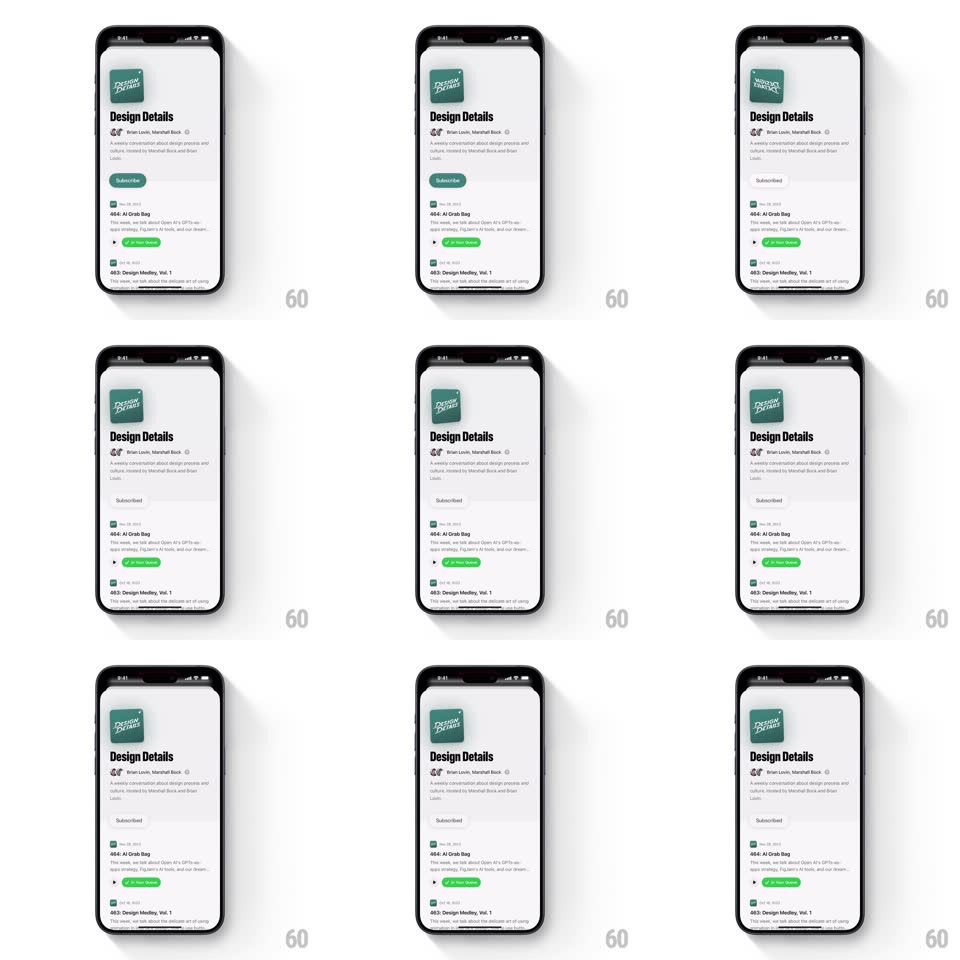

Media
Frame-by-frame

Rebuild this interaction 1:1: Queue's subscribe logo flip - tapping Subscribe on the podcast page flips the show's green square artwork around its horizontal axis in 3D while the button switches to Subscribed.

Rebuild this interaction 1:1: Queue's subscribe logo flip - tapping Subscribe on the podcast page flips the show's green square artwork around its horizontal axis in 3D while the button switches to Subscribed.
## Integration
Integration: stack-agnostic spec - springs given as stiffness/damping, timed motions as duration + curve; map every value to your framework and animation library of choice.
## Scene
The podcast detail page: green "DESIGN DETAILS" square artwork top-left, "Design Details" title, host line, description, a green Subscribe button below, then episode rows ("464: AI Grab Bag", "463: Design Medley, Vol. 1" with a green Now Playing bar on the current one).
## Motion spec
Pattern: 3D vertical logo flip on subscribe.
- Tap Subscribe: the artwork rotates around its horizontal axis (rotateX 0 -> 360deg, 700ms, ease-in-out with slight ease at both ends) - the square turns edge-on (a thin sliver at 90/270deg) and comes back showing the same art, like a coin flipped toward the viewer.
- During the flip a soft shadow under the artwork scales with the rotation (widest when flat, thinnest edge-on).
- The Subscribe button crossfades its label to "Subscribed" and desaturates green -> grey (200ms, starting mid-flip at 90deg).
- Unsubscribing runs the same flip in reverse.
## Calibration
- The flip is a full 360 - the artwork never shows a mirrored back, it spins through.
- Perspective stays shallow (small FOV) - the flip reads tactile, not theatrical.
## Reduced motion
Artwork crossfades with a quick scale pulse.
## Don't miss
- The flip axis is the horizontal center line of the artwork - the top edge tips toward the viewer first.
- The button's color change lands exactly when the artwork is edge-on - the swap hides in the flip's blind spot.